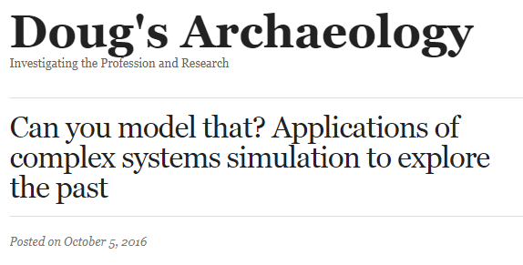
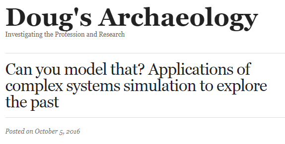

Gaming Artificial Anasazi
Applying immersive game design and storytelling to an agent-based model in archaeologyAndreas Angourakis @AndrosSpica & Shawn Graham @electricarchaeo
https://andros-spica.github.io/TIPC2-Angourakis-Graham-2018/index.html?print-pdf (printable version)
click on images to consult source
I
Gaming simulated pasts
Agent-based modelling (ABM) is a relatively extended practice in Archaeology


 

Big challenge
Complicated designs + lack of documentation
=

Articles are read, results interpreted
but no one engages with the models
What if...
people could play these ABM archaeological models?
Insert the human into the simulation!


Schelling's Segregation model


Sugarscape series and Evolving planet
II
Artificial Anasazi
Anasazi → Ancestral Puebloans


The Artificial Anasazi model was designed for exploring the relation of climate change and cultural collapse


Long House Valley, NE Arizona

III
Gaming immersive ABM
What do we want?
- Agent-based model as game mechanics
- Turn the player into an agent ("Agents lives matter!")
- 3D, first person, ideally VR-compatible
→ immersive, avoid god-like perspective - A game, but also a tool for communicating the model
How can we do it?
- Translate (replicate) the code from NetLogo to Unity (C#)
- Complement/expand the model to fill gaps
(e.g., have individuals instead of households) - Define and implement game mechanics
- Bonus I: develop/import minimum art assets, including text
- Bonus II: proper UI, game save system,
and a great etc.
IV
From NetLogo to Unity


Model translation
More profound understanding of the model
Revealed problematic assumptions
and hard-to-spot mistakes.
→ a general problem in ABM
Game concept
The point of the model:
to understand the factors behind the cultural collapse,
by running the model many times for different parameter settings
The point of the game:
to understand the factors behind the cultural collapse,
by immersive exploration, discovery, and interaction with NPC and the 3D environment

Basic menu

Opening


Loading